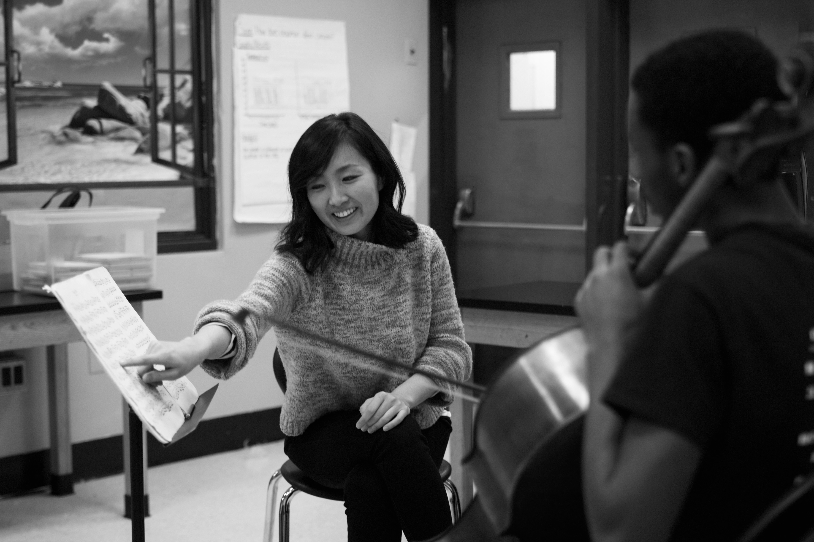

FIFTY FOR THE FUTURE
50 published pedagogical scores, recordings, and learning materials
TEACHING RESIDENCIES
- Weill Music Institute of Carnegie Hall, NY
- Holland Festival, Amsterdam
- MIT Media Lab
- Stanford University
- Washington Performing Arts
- University of Colorado Boulder
- Royal Conservatory of Music, Toronto
- Festival Grec, Barcelona
- Lutosławski National Forum of Music, Krakow
- Ludwigsburg Festival, Germany
- San Francisco Conservatory of Music
- UC San Diego
- UC Los Angeles
- National University of Colombia, Bogotá, Colombia
- University of Arizona
- Montclair University
- Melbourne International Arts Festival, Australia
- University of Nevada Las Vegas
- Esterházy Palace, Austria
- Conservatoire National Supérieur de Musique et de Danse, Lyon
- Face the Music at Kauffman Center, NY
- University of Calgary, Canada
- UC Santa Barbara
- University of Maryland
- Syracuse University
- National University of Colombia, Bogotá, Colombia
- UT Austin
- Oberlin College
- Yellow Barn Young Artists Program, Vermont
GUEST LECTURES
- UC Berkeley
- NYU Abu Dhabi
- UT Austin
- Dartmouth College
- Duke University
- University of Southern California
- ARS Musica, Belgium
- University of Richmond
- Colorado College
- Bergen Festival, Norway
- Cornish College
- Colorado State University
- University of South Carolina
- UMass Amherst
- University of Illinois Urbana-Champaign
- Wexner Center, Columbus, OH